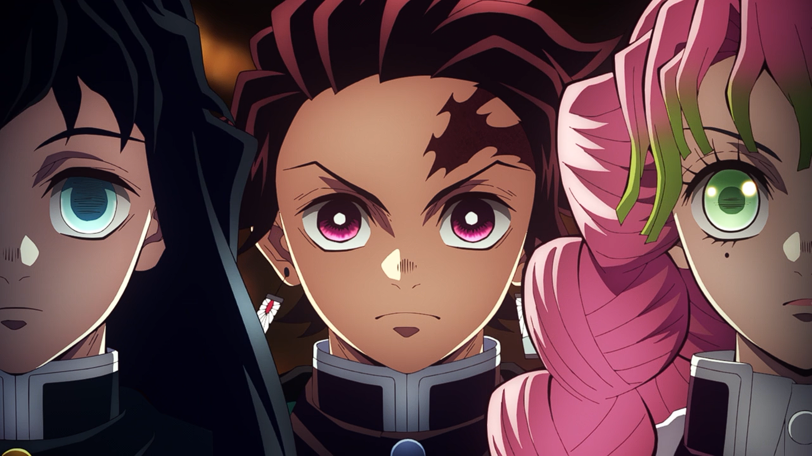

Lançado em Abril de 2023
Demon Slayer: Swordsmith Village Arc

A história conta sobre um jovem que ganha a vida vendendo carvão até
descobrir que sua família foi massacrada por um demônio, restando
apenas sua irmã, Nezuko, que foi infectada e está se tornando um
monstro. O protagonista, então, decide virar um caçador de demônios e
buscar vingança.